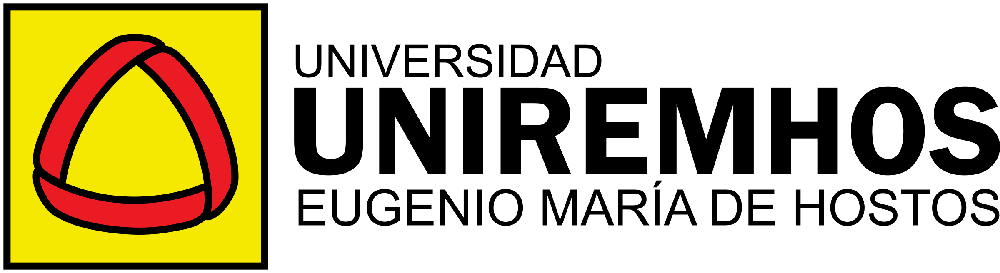

Encuestamos a 42 docentes, la mayoría del recinto Santo Domingo. La investigación ya está en las aulas; la oportunidad está en estructurarla, evaluarla y documentarla.
92.9%
incorpora actividades investigativas en al menos algunas de sus asignaturas.
40.5%
no aplica habitualmente una secuencia metodológica estructurada.
45.2%
conserva documentación parcial, limitada o ninguna de sus experiencias.
Todo el recorrido ocurre en INVESTIGA+ Docente, una herramienta en línea que guarda tus avances mientras trabajas. Funciona en la computadora y en el celular.
1
Autodiagnóstico
Recibe la ruta de formación que se ajusta a tu práctica.
2
Evaluación inicial
Valora tus competencias en siete dimensiones.
3
Unidad investigativa
Diseña la experiencia de tu asignatura, paso a paso.
4
Matriz de coherencia
Verifica que cada elemento se derive del anterior.
5
Rúbrica
Define criterios de proceso y de aprendizaje individual.
6
Portafolio
Reúne las evidencias mínimas de tu experiencia.
7
Evaluación final
Compara tu avance con el punto de partida.
Durante el diseño, la coordinación revisa tu unidad y te deja retroalimentación en la misma herramienta.
Cada taller produce una parte concreta de tu unidad investigativa. Entre sesiones cuentas con revisiones y asesoría metodológica.
Taller 1 · [FECHA]
Del problema a los objetivos
Vincula la experiencia con los resultados de aprendizaje de tu asignatura y formula problema, pregunta y objetivos.
Taller 2 · [FECHA]
Método, instrumentos y ética
Elige el diseño y los instrumentos pertinentes, prevé el análisis y aplica pautas de consentimiento y protección de datos.
Taller 3 · [FECHA]
Evaluación y documentación
Construye rúbricas de proceso y de aprendizaje individual y organiza el portafolio mínimo de evidencias.
Productos que puedes usar desde este período académico en tus asignaturas.
Seis horas de talleres, más el tiempo de diseño de tu unidad, que integras a una asignatura que ya impartes. No se trata de tareas adicionales a tu planificación, sino de fortalecerla.
No. El autodiagnóstico te asigna una ruta según tu práctica actual: acompañamiento amplio, fortalecimiento focalizado o actualización.
Solo tú y la coordinación del programa. Los resultados del piloto se analizan y reportan de forma agregada y confidencial.
No. La herramienta funciona en el navegador, en la computadora o el celular. Tus avances se guardan automáticamente.
Toma unos minutos y define tu ruta antes del primer taller.